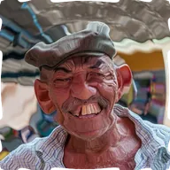

물결

중심점에서 퍼져 나가는 동심원 물결입니다. 진폭, 파장, 속도를 조절할 수 있습니다.
설정
| 설정 | 유형 | 범위 | 기본값 |
|---|---|---|---|
| 중심 | 점 (X, Y) | 0~1 | 0.5, 0.5 |
| 진폭 | 숫자 | 0~100 | 20 |
| 파장 | 숫자 | 1~200 | 30 |
| 속도 | 숫자 | 0~10 | 2 |

중심점에서 퍼져 나가는 동심원 물결입니다. 진폭, 파장, 속도를 조절할 수 있습니다.
| 설정 | 유형 | 범위 | 기본값 |
|---|---|---|---|
| 중심 | 점 (X, Y) | 0~1 | 0.5, 0.5 |
| 진폭 | 숫자 | 0~100 | 20 |
| 파장 | 숫자 | 1~200 | 30 |
| 속도 | 숫자 | 0~10 | 2 |